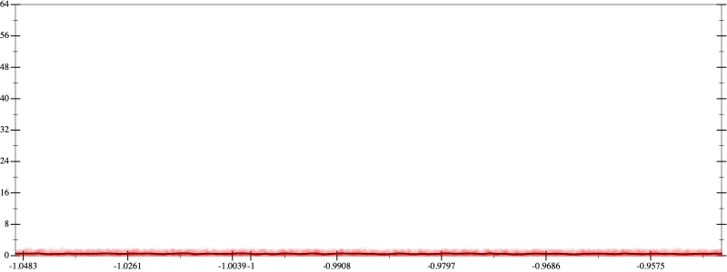
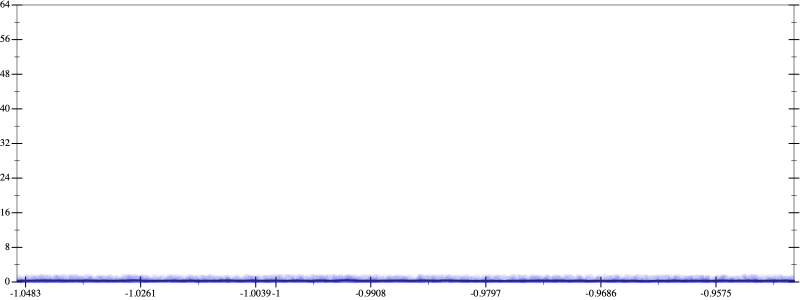
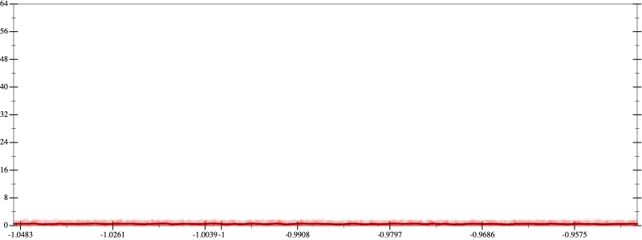
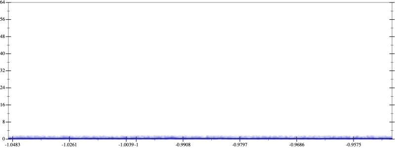

Initial program 0.5
\[\left(\left(\left(\left(1.0 + -5.0 \cdot x\right) + 5.0 \cdot \left(x \cdot x\right)\right) + -1.666667 \cdot \left(\left(x \cdot x\right) \cdot x\right)\right) + 0.208333 \cdot \left(\left(\left(x \cdot x\right) \cdot x\right) \cdot x\right)\right) + -0.008333 \cdot \left(\left(\left(\left(x \cdot x\right) \cdot x\right) \cdot x\right) \cdot x\right)\]
Applied simplify0.3
\[\leadsto \color{blue}{\left(x \cdot -5.0 + 1.0\right) + \left(\left(\left(x \cdot x\right) \cdot \left(x \cdot x\right)\right) \cdot \left(-0.008333 \cdot x + 0.208333\right) + \left(x \cdot x\right) \cdot \left(-1.666667 \cdot x + 5.0\right)\right)}\]
- Using strategy
rm Applied associate-*l*0.3
\[\leadsto \left(x \cdot -5.0 + 1.0\right) + \left(\left(\left(x \cdot x\right) \cdot \left(x \cdot x\right)\right) \cdot \left(-0.008333 \cdot x + 0.208333\right) + \color{blue}{x \cdot \left(x \cdot \left(-1.666667 \cdot x + 5.0\right)\right)}\right)\]
 
